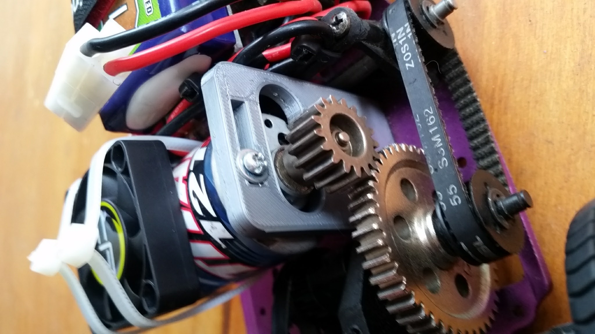
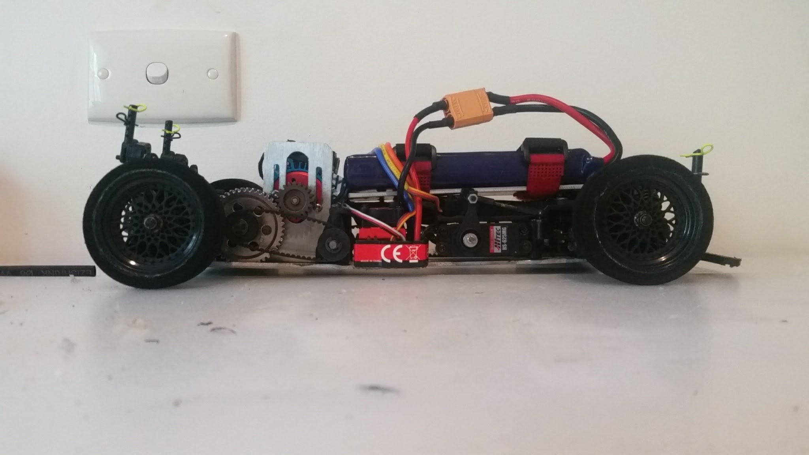
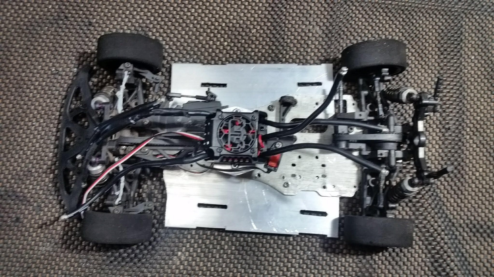
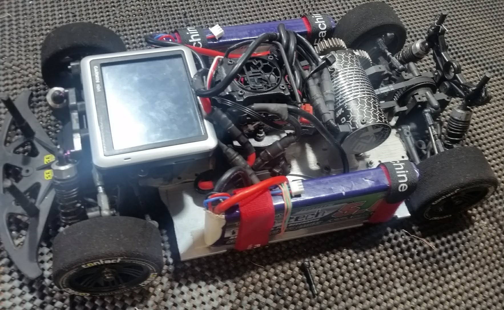
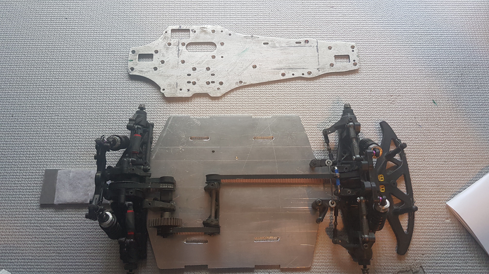
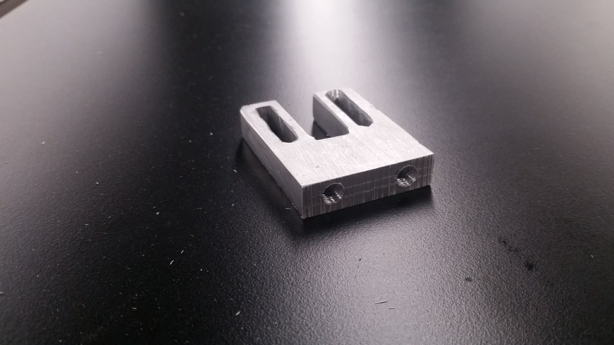

This HPI Nitro RS4 2 came into my hands when I found it in a hard rubbish pile in 2015. I converted it to electric in 2017 using custom parts. Over the years it saw many iterations of custom motor mounts, chassis, and other parts, finally ending up as an overpowered beast.
1 / 7
The initial conversion used a 3D printed motor mount designed in Onshape, with an aluminum battery tray, and brushed electronics.

2 / 7
In 2018, I made a new motor mount from 3mm aluminium. This one allowed vertical adjustment of the motor, as horizontal space was limited.

3 / 7
In a quest for more power, I needed more batteries. As such, a fabricated two aluminum plates to widen the chassis.

4 / 7
With a massive 6s brushless system installed, batteries strapped, and a GPS fitted, this car was ready to meet the curb on its maiden run. It was a light crash and I only bent the motor mount.

5 / 7
Despite the crash being minor, I decided to take what I'd learnt and completely rebuild the car. I a designed a new widened chassis, and with a lazercut template cut it from 3mm aluminium on my scroll saw.

6 / 7
I also fashioned a stronger motor mount from 10mm thick aluminum

7 / 7
The car remains in this form to this day. Having been built too fast for any suburban street, it was doomed to become a shelf queen.